Dans le cadre d'un projet universitaire, moi et une camarade avons dû créer une campagne institutionelle sur un évènement ou une ville. Nous avons tourné notre attention vers la Fête de la Laine, une fête annuelle de Felletin en Creuse.
La communication de cet évènement est assez pauvre ; pourtant, c'est une fête mettant en avant le patrimoine de la ville et attirant de nombreuses personnes de la région.
Il nous fallait rajeunir et dynamiser la communication, en reflétant l'identité de l'évènement et de sa ville. Etant une fête très aimée des familles, nous voulions montrer un côté chaleureux et réconfortant.
Nous avons recherché en profondeur l'histoire de la fête et de sa ville. Nous avons vite trouvé les thèmes et éléments importants, telles que les petites poupées de laine que nous avons réutilisées dans le logo.
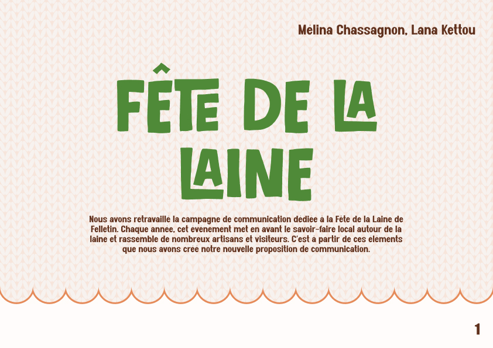
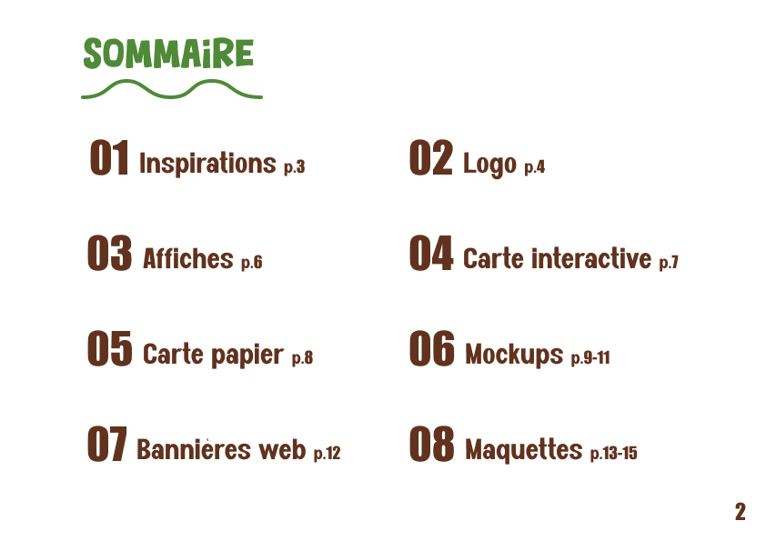
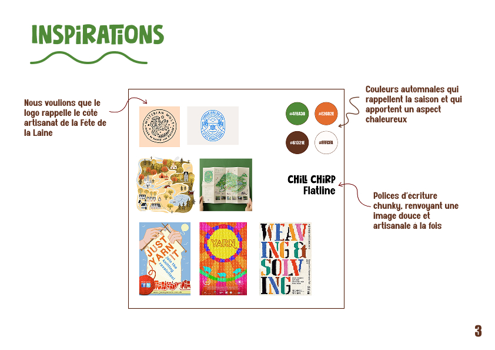
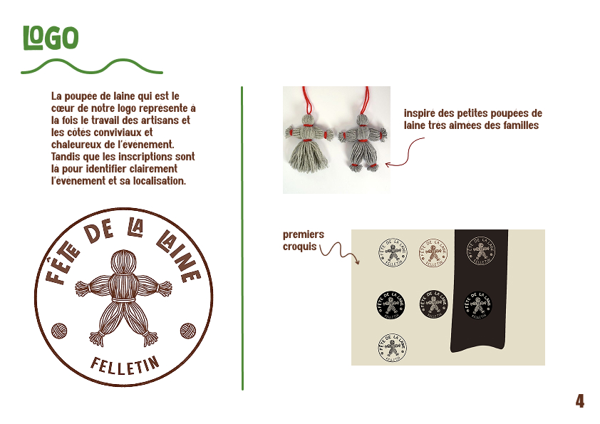
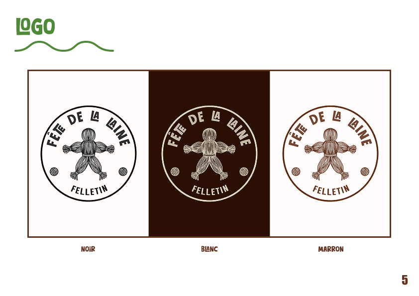
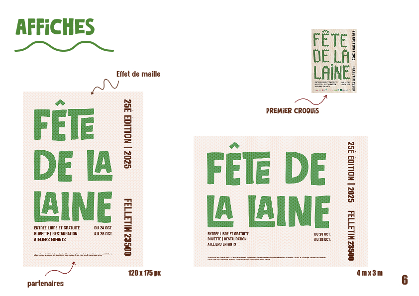
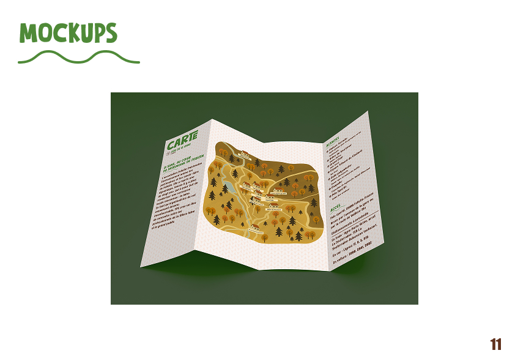
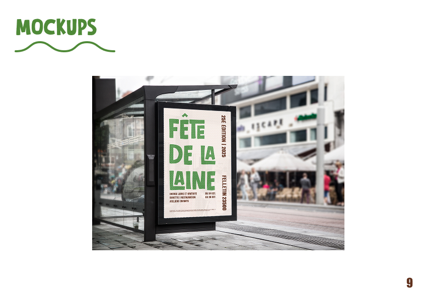
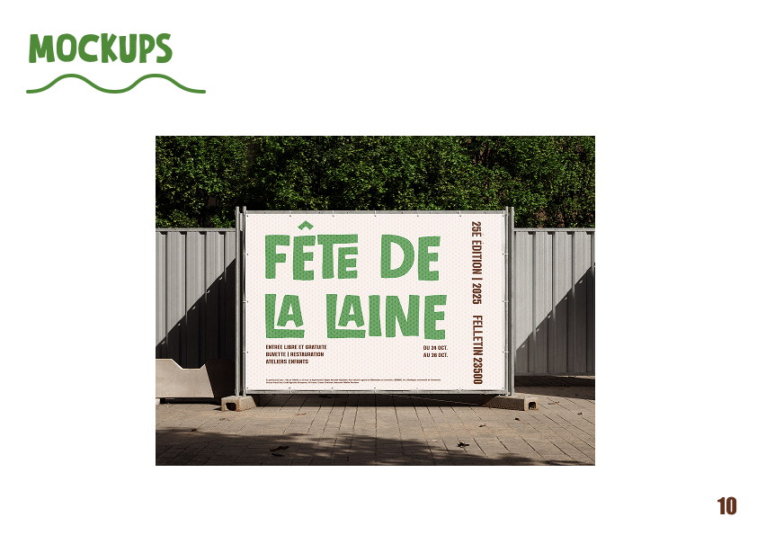
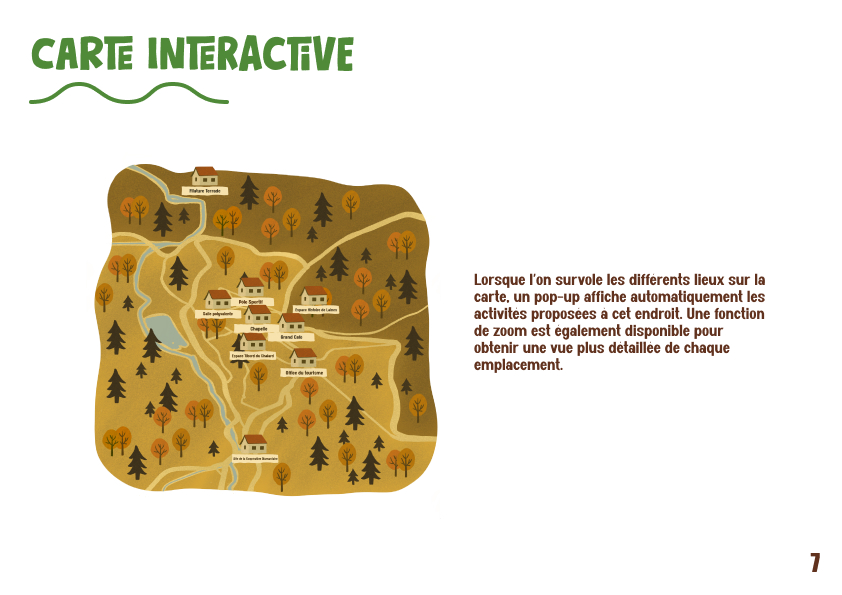
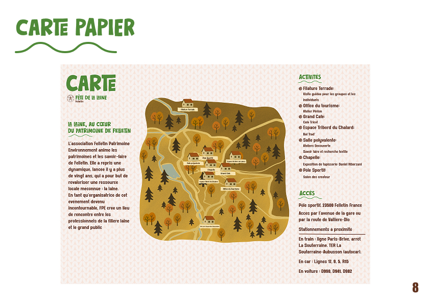
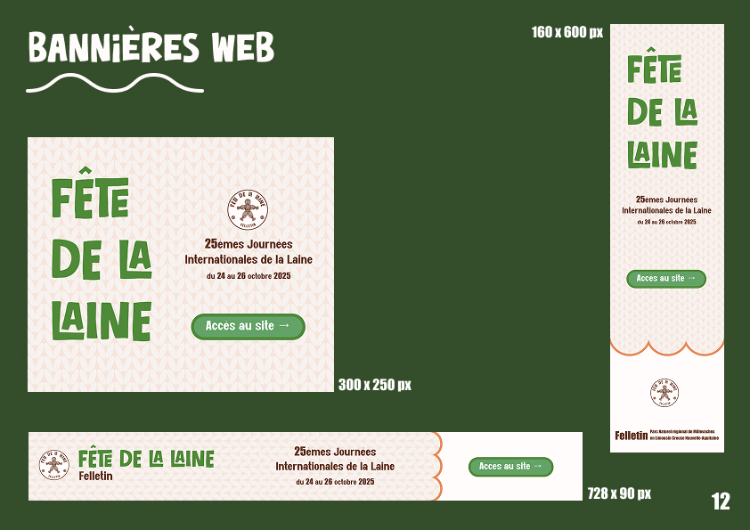